History of Amsterdam
Amsterdam has a long and eventful history. The origins of the city lie in the 12th century, when fishermen living along the banks of the River Amstel built a bridge across the waterway near the IJ, which at the time was a large saltwater inlet. Wooden locks under the bridge served as a dam protecting the village from the rising IJ waters, which often flooded the early settlement. The mouth of the river Amstel, where the Damrak is now, formed a natural harbor, which became important for trading-exchange from the larger koggeships into the smaller ships that sailed the merchandise deeper into the hinterland.
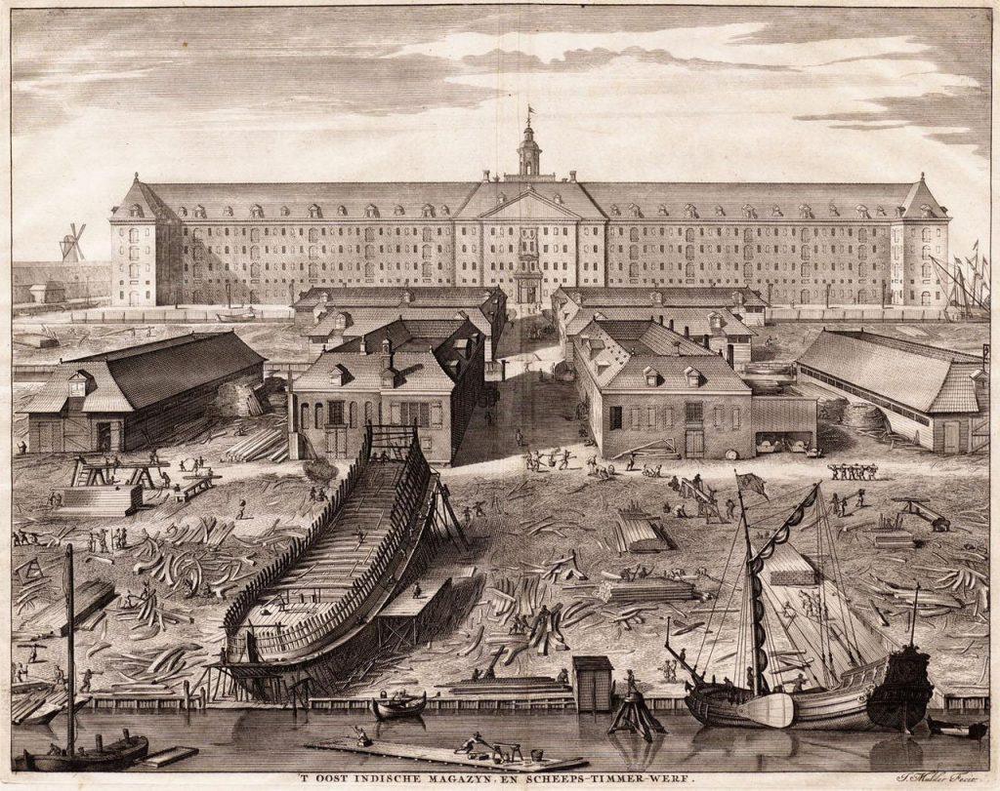 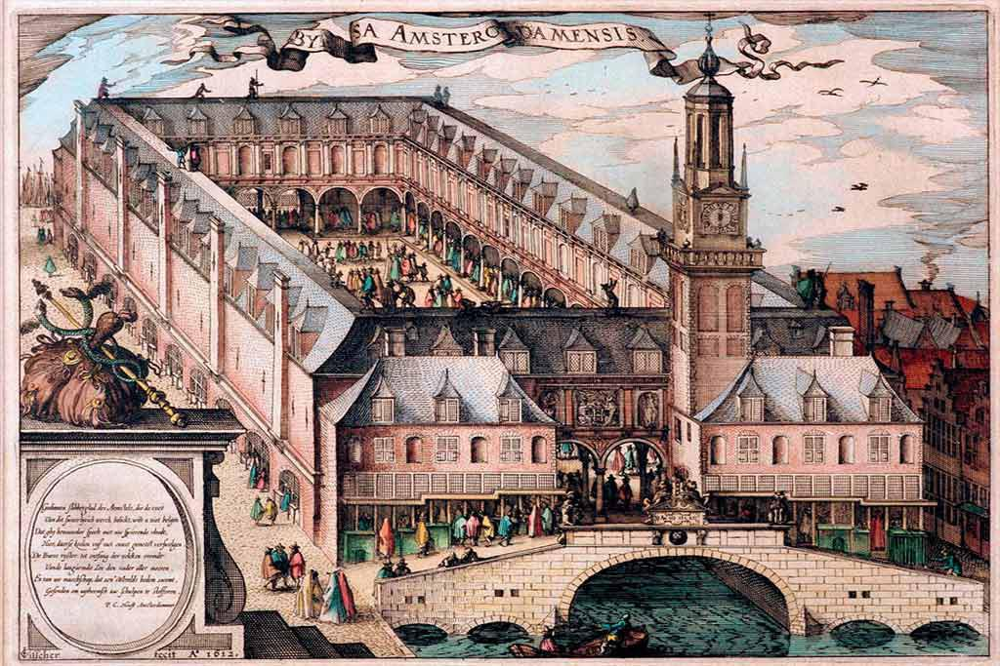 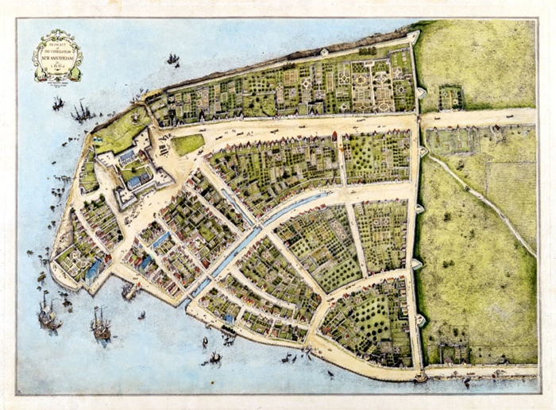
Click on photo to enlarge.
Read more about historyBuy tickets!
Check the best prices for museum or tour tickets. You can find something for you!
Buy tickets
Gallery
Check beautiful photos of amsterdam. Check our gallery
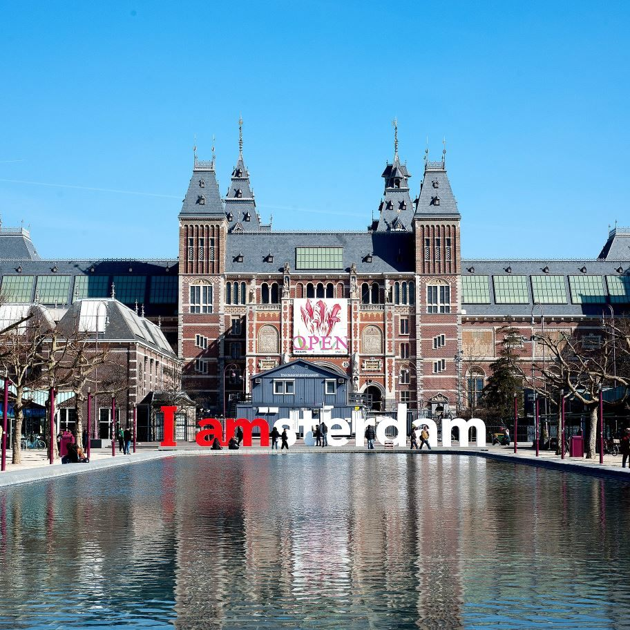
 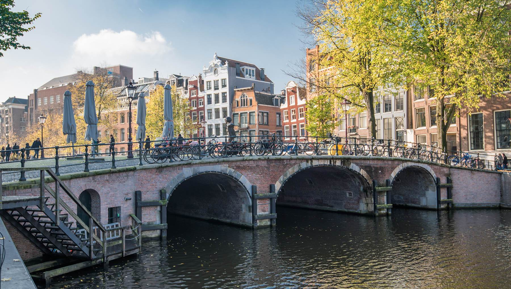
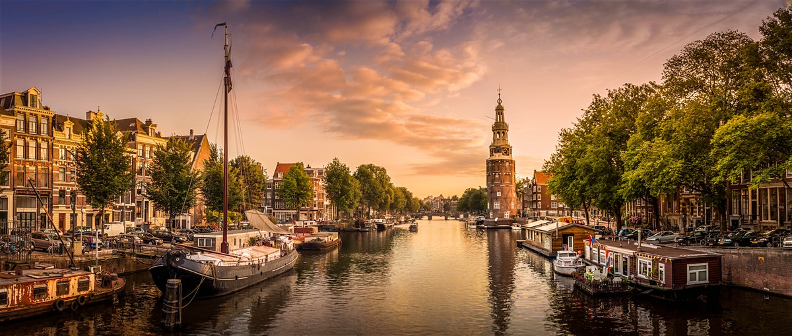
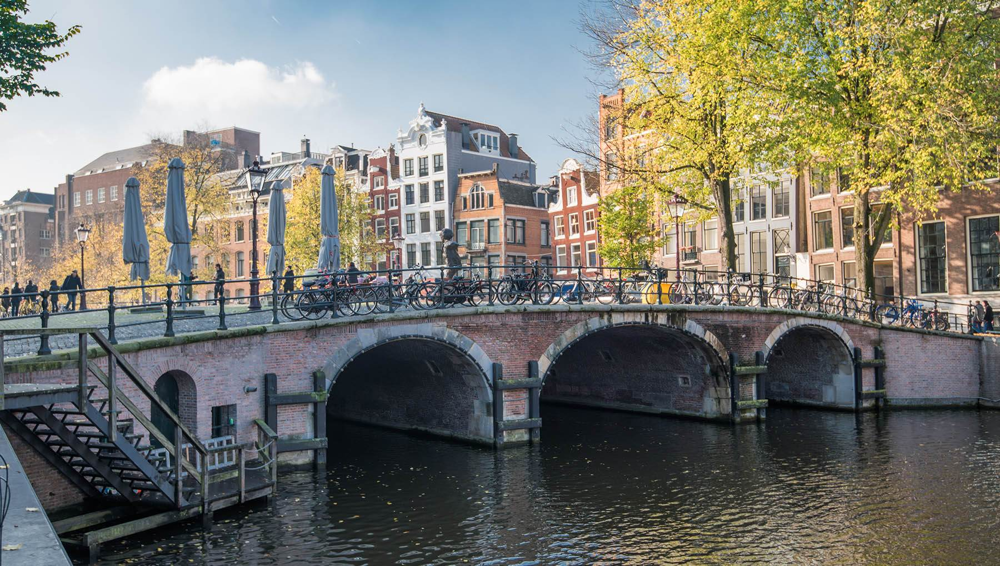
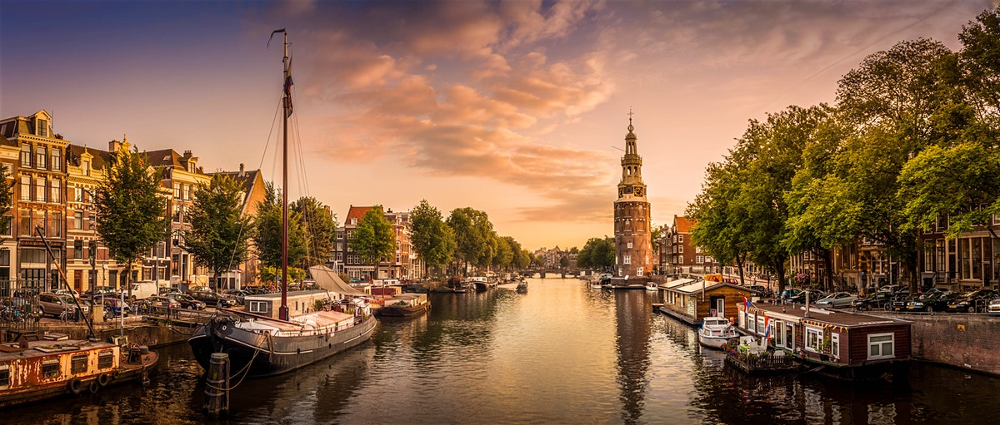
Click on photo to enlarge.
Check our gallery for more photosAttractions
With more than 800 years of history to discover, Amsterdam is rich with fascination sights. From ancient churches to magnificent museums, secret courtyards to quaint cobbled streets, and, of course, the city's world-famous canals there's an overwhelming amount of things to see and do in Amsterdam. So pack your camera, pick up a map and get ready for an adventure!
Go sightseeing in Amsterdam
From the Old Masters at the Rijksmuseum to modern and contemporary art and design at the Stedelijk, Amsterdam’s world-class art museums have enough to offer to fill weeks. But there are plenty more ways to soak up Amsterdam’s history too: the famous Anne Frank House, a collection of quirky and unusual museums, and the postcard-perfect streets of the Jordaan. Of course, no visit to Amsterdam is complete without the classics – along the way you’ll find all the tulips, windmills and cheese you could wish for.
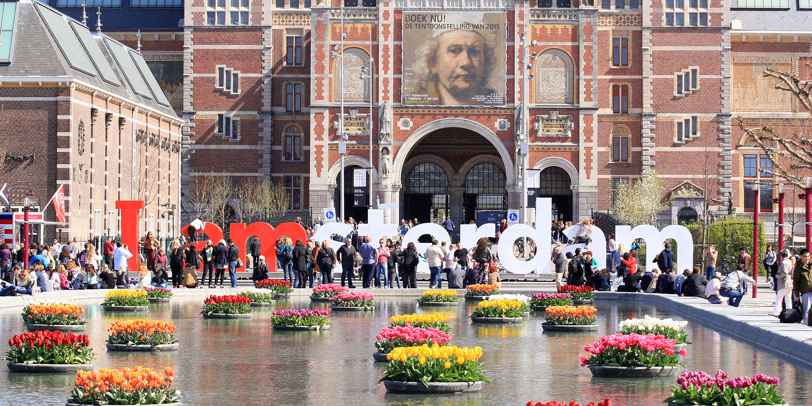 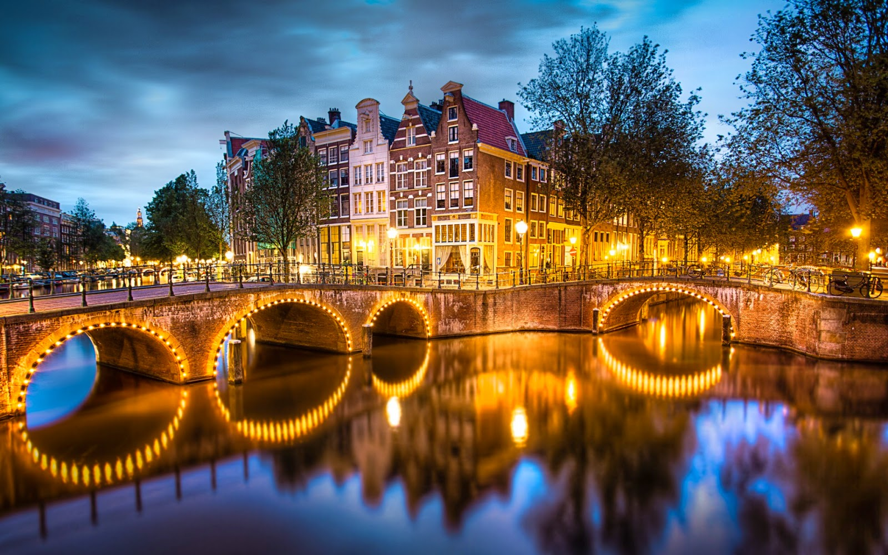 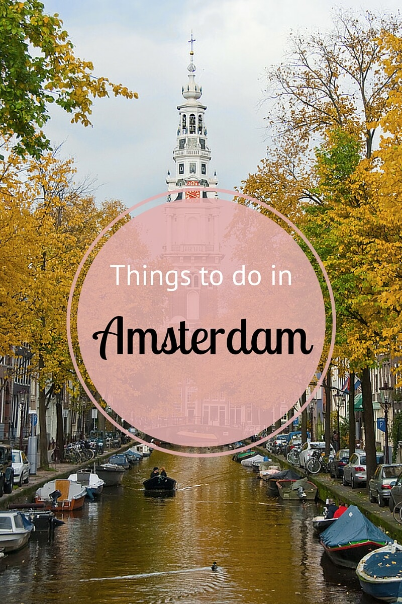
Click on photo to enlarge.
Check attractions is Amsterdam